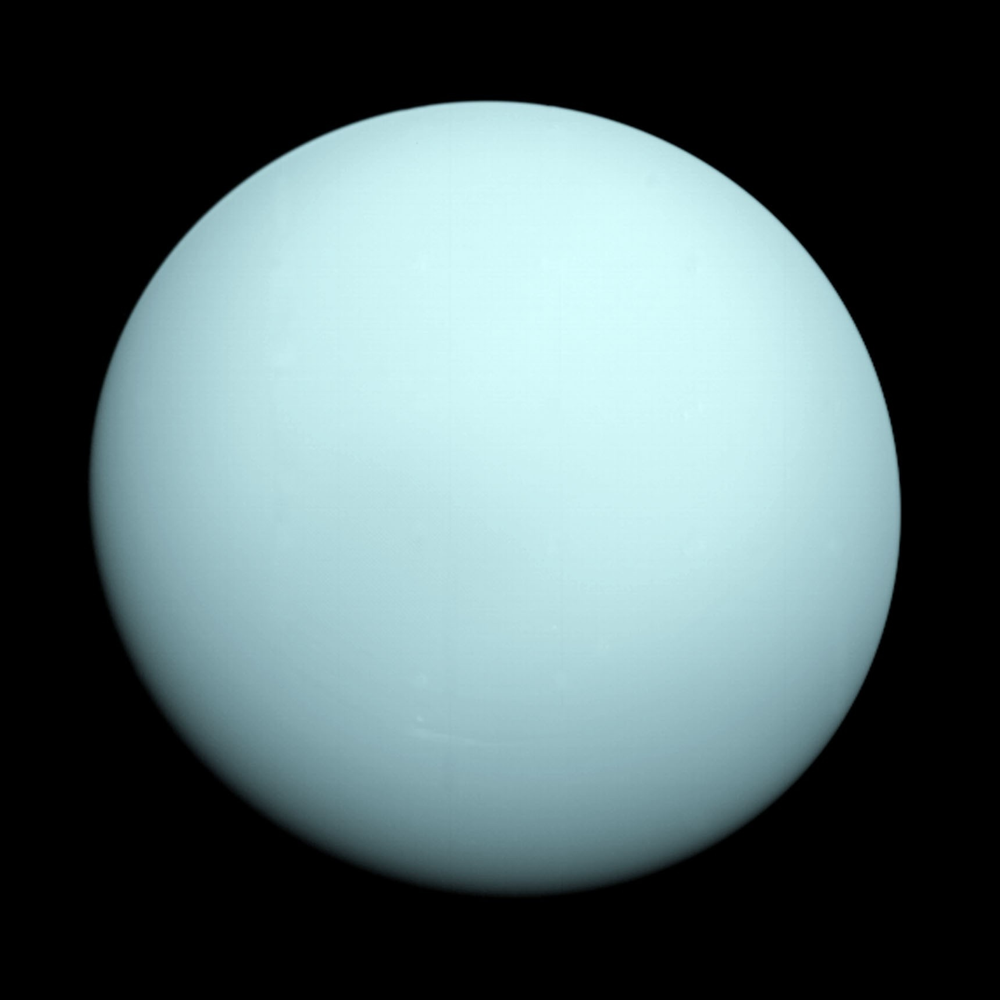

About Uranus
Uranus is the seventh planet from the Sun and is known for its unique rotation. It spins on its side, making it very different from other planets.
The planet has a blue-green color due to methane gas in its atmosphere. Uranus is very cold and has faint rings and several moons.

Uranus is the seventh planet from the Sun and is classified as an ice giant. It has a pale blue-green color because methane in its atmosphere absorbs red light while reflecting blue and green wavelengths, giving it its distinct appearance. Uranus is unique in the Solar System because it rotates on its side, with an extreme axial tilt that causes unusual and extreme seasonal patterns. Each pole experiences long periods of continuous sunlight followed by long darkness. This tilted rotation makes Uranus one of the most unusual and least understood planets, especially compared to the other gas and ice giants.
The planet also has faint rings, many moons, and extremely cold temperatures due to its great distance from the Sun. It was discovered in 1781 and marked the first planet found using a telescope, expanding our understanding of the Solar System. Uranus remains very important for studying the outer Solar System and the structure of ice giants. Scientists continue to examine it because it can reveal how planets form, change, and evolve in the cold, distant regions far from the Sun.
Educational Video
This video explains the Uranus.
Key Facts
- Distance from Sun: 2.9 billion km
- Number of Moons: 28
- Type: Ice Giant
- Day Length: 17 hours